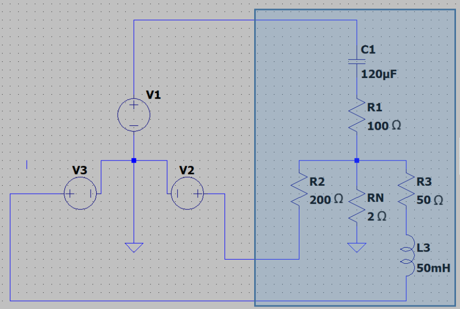

Tre sinusser forskudt 120°. Er lasten ens i alle faser, går strømmene i nul i nullederen.
(a) FORKLAR · 2 SLIDES
Trefase og Y-forbindelse. Hvorfor nullederen er strømløs ved balance, og hvad der sker, når den ikke er det.
(b) BEREGN · 2 SLIDES
Fasestrømme, strømmen i nullederen, S, P, Q og PF for lasten. , 50 Hz.
Opgavens kredsløb

→ / mellemrum: næste · ←: forrige · F: fuld skærm
SPM. 8 (a) · 1/2
Tre cyklister på én tandemhver sit tryk, 120° forskudt
Trefase i Y
(opgavens fasefølge, alle RMS)
hvorfor 3Jævn effekt. Én cyklist giver ryk. Tre, der skiftes, giver et jævnt træk. En trefasemotor kører derfor roligt.
Nullederen fører summen tilbage: (KCL i stjernepunktet).
balanceEns last: tre lige store pile 120° fra hinanden danner en lukket trekant, så .
Linjespænding mellem to faser: (220 → 381 V).
Prøv selv: gør fase 1 tungere end de andre
Strøm i fase 1
SIGTre spændinger 120° fra hinanden. Ved ens last ophæver strømmene hinanden, og nullederen er strømløs. Ubalance giver strøm i nullederen.
SPM. 8 (a) · 2/2
Når nullederen har en modstandstjernepunktet flytter sig
1
Ideel nulleder (): hver fase er sit eget kredsløb,
2
Nulleder med RN: lastens stjernepunkt N′ får en spænding . Find den med KCL i N′ (Millman):
3
Fasestrømme: og
4
Effekt: læg faserne sammen, .
Opgavens last: skru på RN
RN
SIGMed en ideel nulleder er hver fase uafhængig. Med RN flytter stjernepunktet sig, og det finder man med Millman. Her er RN kun 2 Ω, så flytningen er lille: 3,9 V.